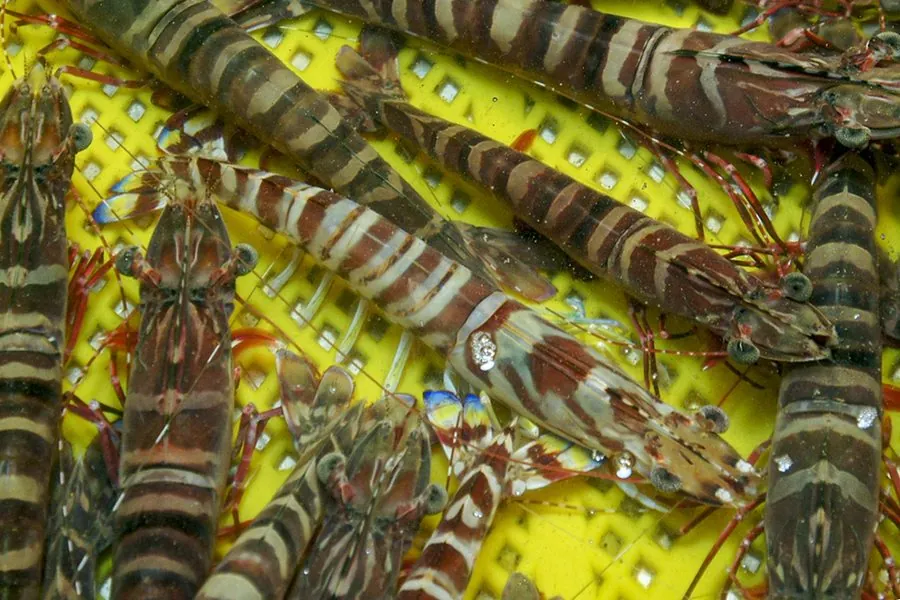

甲壳动物 · 动物界
日本对虾 Marsupenaeus japonicus

体表有褐色横斑的优质对虾，耐离水运输，是日本和中国重要的经济养殖虾种，肉质紧实，价格通常较高。
- 分类
- 门节肢动物门纲软甲纲目十足目科对虾科属囊对虾属
- 栖息环境
- 浅海沙泥底，白天潜沙，夜间出来觅食
- 地理分布
- 日本、中国沿海、东南亚等印度—西太平洋海域
- 保护级别
- 暂无评估；以养殖供应为主
物种志
日本对虾体长可达 20–30 cm，体色淡黄褐，腹部有深褐色横斑，尾扇边缘呈蓝色或黄色，额剑上缘有锯齿。体表斑纹清晰，外形漂亮，俗称花虾或竹节虾。
它生活在浅海沙泥底，夜间活动，白天潜沙，杂食，取食底栖动物和有机碎屑。日本对虾原产于印度—西太平洋，包括日本、中国沿海和东南亚，是重要的海水养殖对象。它的耐离水能力较强，捕捞后可短途干运，因此市场价格较高。养殖方式以池塘养殖为主，需要稳定的水温和水质；野生种群因捕捞压力较大，主要以养殖供应市场。它也是日本料理中常见的车虾，市场价格较高，养殖技术已经比较成熟，是高端寿司店的常用虾类。
形态与习性
- 食性杂食，取食底栖动物和有机碎屑
- 体长约 20–30 cm
- 习性白天潜沙，夜间活动觅食
- 运输耐离水能力较强，可短途干运
- 养殖重要海水养殖对象，以池塘养殖为主
- 识别腹部有深褐色横斑，尾扇边缘蓝黄色
趣味知识
- 日本对虾腹部有清晰的褐色横斑，看起来像竹节。
- 它白天会钻进沙里躲藏，夜里才出来活动。
- 日本对虾耐离水，捕捞后可以短途干运，所以价格较高。